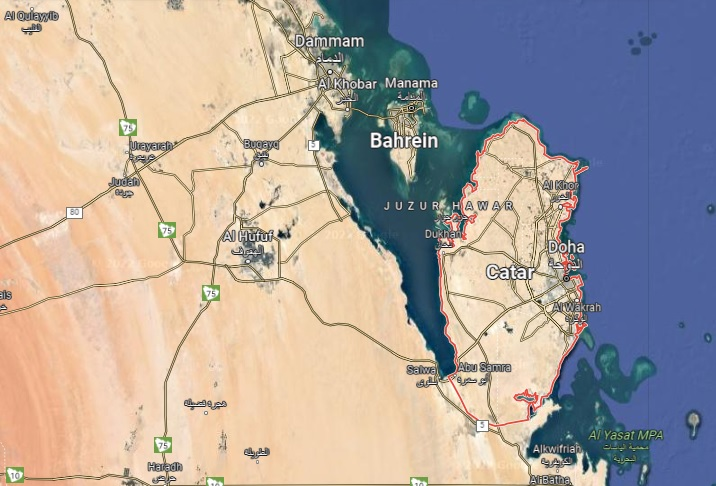

Copa Fifa 2022 |
| País sede
|
Qatar
|
| Capital
|
Doha
|
| Língua Oficial
|
Árabe
|
| Religião
|
Islamismo
|
| Governo
|
Monarquia Absolutista
|
| Localização
|
Ásia Ocidental
|
| População
|
2.832.000
|
Mapa do Qatar

Qatar: país sede
Qatar é um país árabe, um emirado do Oriente Médio, que ocupa a pequena Península do Catar na costa nordeste da Península Arábica. Faz fronteira com a Arábia Saudita ao sul, e o Golfo Pérsico envolve o resto do país. O país é um emirado absolutista e hereditário. Foi um protetorado britânico até ganhar a independência em 1971. Desde então, tornou-se um dos estados mais ricos da região, devido às receitas oriundas do petróleo e do gás natural. Antes da descoberta do petróleo, sua economia era baseada principalmente para a extração de pérolas e comércio marítimo. Com uma população estimada em 2,8 milhões de habitantes, apenas 313 mil são nativos catarianos, o país obtém o rendimento nacional principalmente das exportações de petróleo e gás natural, já que possui vastas reservas de petróleo. São estimados entre 2 300 km³ e 23 000 km³ (que equivale a cerca de 80 milhões de barris [13 milhões m³] de petróleo. A riqueza e o padrão de vida do Catar se comparam com os dos Estados da Europa Ocidental, tendo o país o maior PIB per capita no mundo árabe e o terceiro do mundo Ocidental. |
Copa do Mundo
| A Copa do Mundo é o evento esportivo mais assistido e prestigiado em todo o mundo, ultrapassando até mesmo os Jogos Olímpicos. Foi criada tendo em vista o sucesso dos torneios olímpicos de futebol. Em 28 de maio de 1928, o Congresso da FIFA em Amsterdã decidiu realizar um campeonato mundial de futebol. Por ser o então bicampeão olímpico de futebol e comemorando o centenário de sua independência em 1930, a FIFA nomeou o Uruguai como país-sede da primeira Copa do Mundo. Assim, nas edições entre 1934 e 1978, dezesseis equipes competiram em cada torneio. O torneio foi expandido para 24 equipes em 1982 e para 32 equipes em 1998, permitindo que mais seleções da África, Ásia e América do Norte participassem. Em outubro de 2013, o presidente da FIFA Joseph Blatter informou que estava sendo estudada a ideia de garantir vagas separadas para a União Caribenha de Futebol no torneio.Em outubro de 2016, o presidente da FIFA Gianni Infantino, declarou seu apoio a uma Copa do Mundo de 48 equipes em 2026. Em 10 de janeiro de 2017, a FIFA confirmou que a Copa do Mundo FIFA de 2026 será disputada com 48 equipes.Economica e politicamente, a competição tem efeitos positivos sobre o crescimento de certos setores, sobre a conexão entre povos e culturas, além de ser oportunidade para o desenvolvimento do país que a sedia. |
Copa do Mundo 2022
O Qatar decidiu apresentar a sua candidatura apenas para 2022. Com apenas 1,6 milhão de habitantes, o país pretendeu ser a primeira nação do Oriente Médio a receber tal competição, tentando aproximar os mundos ocidentais e orientais. Uma das preocupações da candidatura foram as temperaturas muito elevadas que se registram naquele país. O então presidente da FIFA, na epoca Joseph Blatter, admitiu apoiar a ideia de um país do Oriente Médio recebesse a competição. Ele afirmou que a região merece receber tal competição, já que 22 países da região nunca tiveram uma oportunidade concreta de receber um torneio deste tamanho. |
Infraestrutura
Uma das preocupações da candidatura foram as temperaturas muito elevadas que se registram naquele país. A Copa do Mundo sempre foi realizada entre junho e julho. Nesse período de tempo, as temperaturas no Qatar ultrapassam facilmente os 40 graus celsius, nunca baixando para menos de 30 graus celsius. O sheik Mohammed bin Hamad bin Khalifa al-Thani, autoridade responsável pela candidatura de 2022, afirmou utilizar uma tecnologia dentro dos estádios de modo a conseguir baixar as temperaturas em cerca de 20 graus celsius. Além disso, o aspecto cultural também foi considerado. A ideia é que os estádios reflitam os aspectos históricos e culturais do Qatar, e cada estádio visa incorporar quatro prioridades: legado, conforto, acessibilidade e sustentabilidade. O Catar pretende construir estádios com os mais altos padrões ambientais e de sustentabilidade, que serão equipados com sistemas de refrigeração ecologicamente corretos, buscando reduzir as temperaturas dentro do estádio em até 20°C (36°F). O objetivo é construir estádios usando materiais ecológicos, equipamentos inofensivos e soluções ecologicamente sustentáveis por meio da implementação de soluções renováveis e de baixo consumo de energia, além de que as camadas superiores dos estádios serão desmontadas após a Copa do Mundo e doadas a países com infraestrutura esportiva menos desenvolvida. |
Sorteio Final
O sorteio final para a fase de grupos foi realizado em 1 de abril de 2022, em Doha. As equipes foram distribuídas em quatro potes, com base na colocação do Ranking Mundial da FIFA de março de 2022. Maiores informações podem ser encontradas em Seleções
|
|